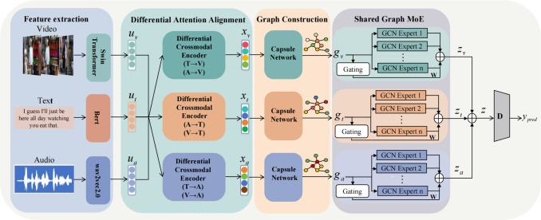
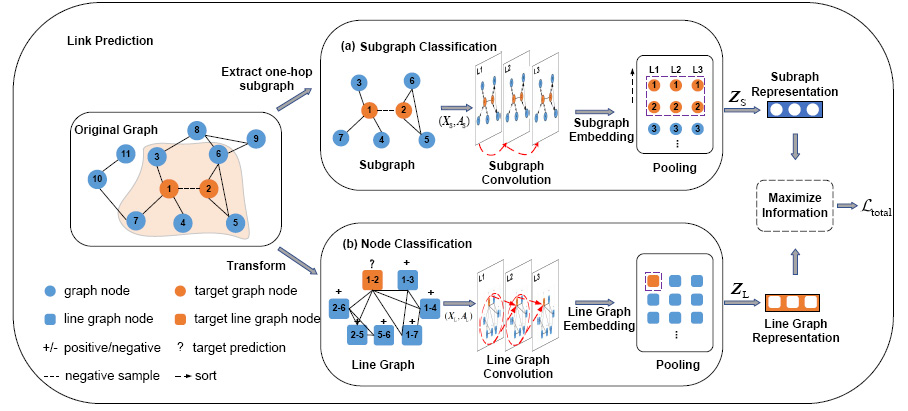
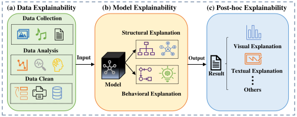
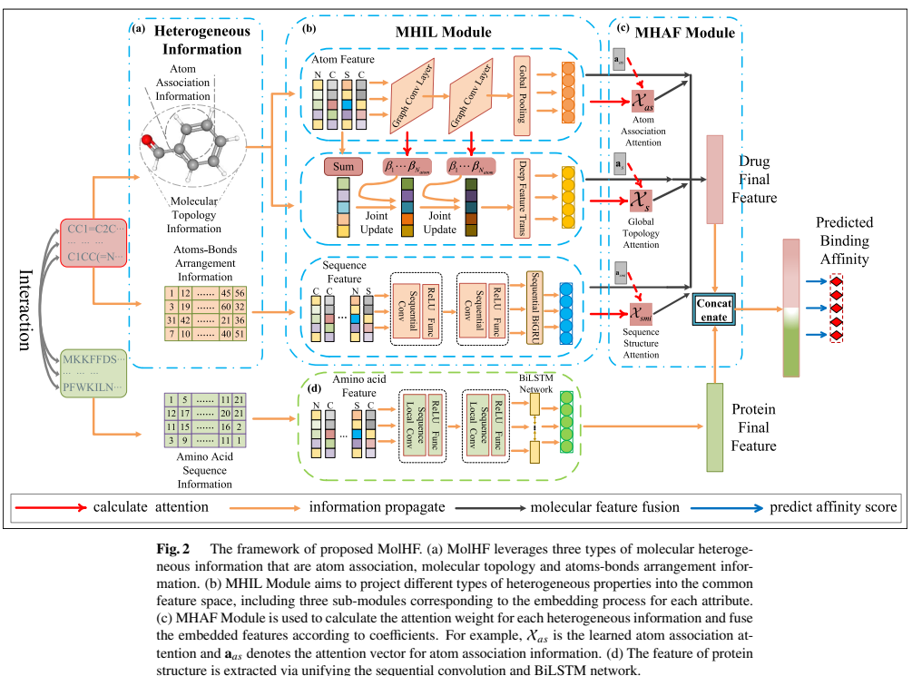
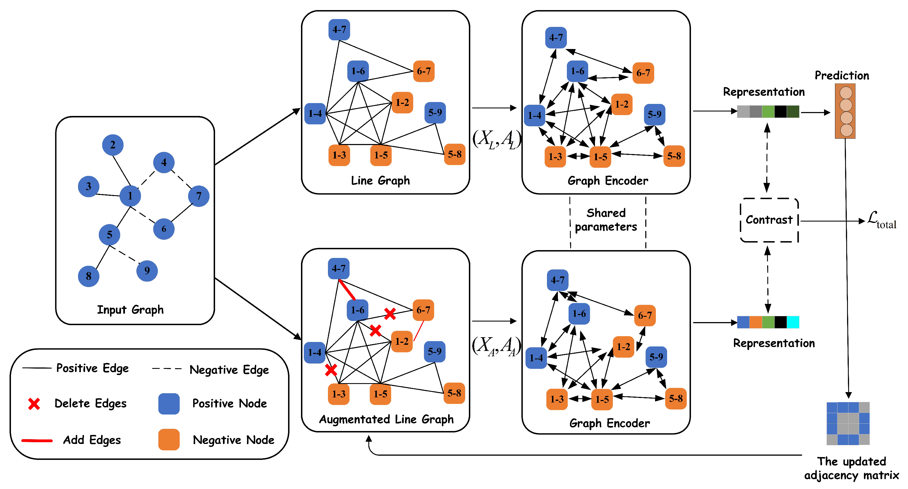

2023 – Present
Ph.D. in Computer Science and Technology
School of Computer Science and Technology, Xi'an Jiaotong University
School of Computer Science and Technology, Xi'an Jiaotong University
Ph.D. Student in Computer Science and Technology · Xi'an Jiaotong University
I am a Ph.D. student in the School of Computer Science and Technology at Xi'an Jiaotong University. My research interests include multimodal learning, graph representation learning, link prediction, and biomedical interaction prediction.
Publication records are based on my public ORCID profile. Duplicate records have been merged by DOI or title.




